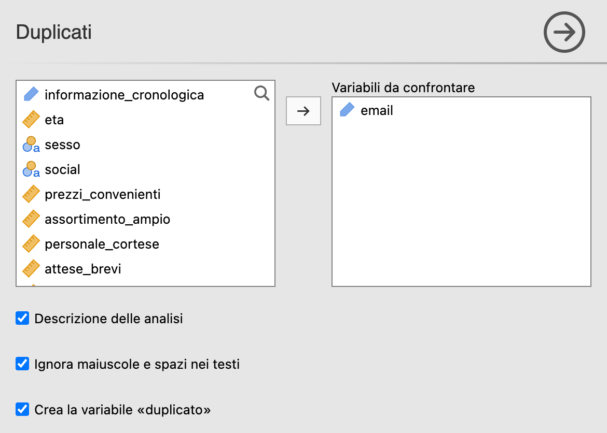
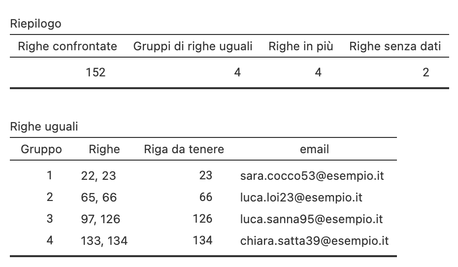
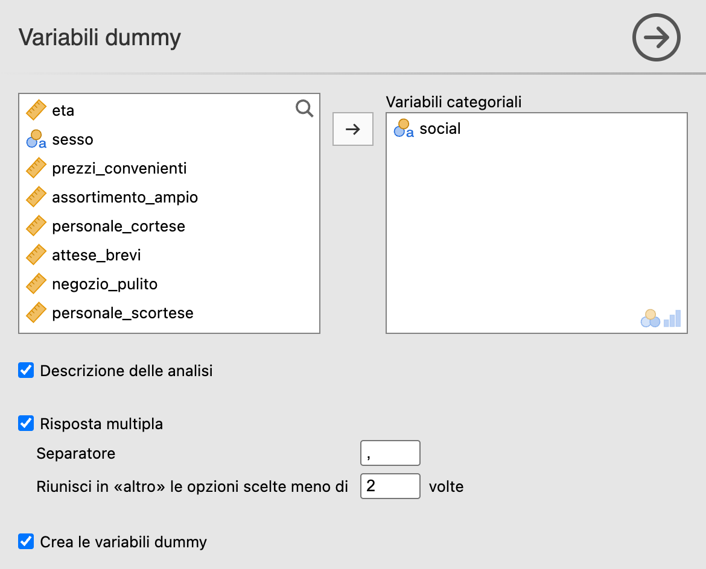
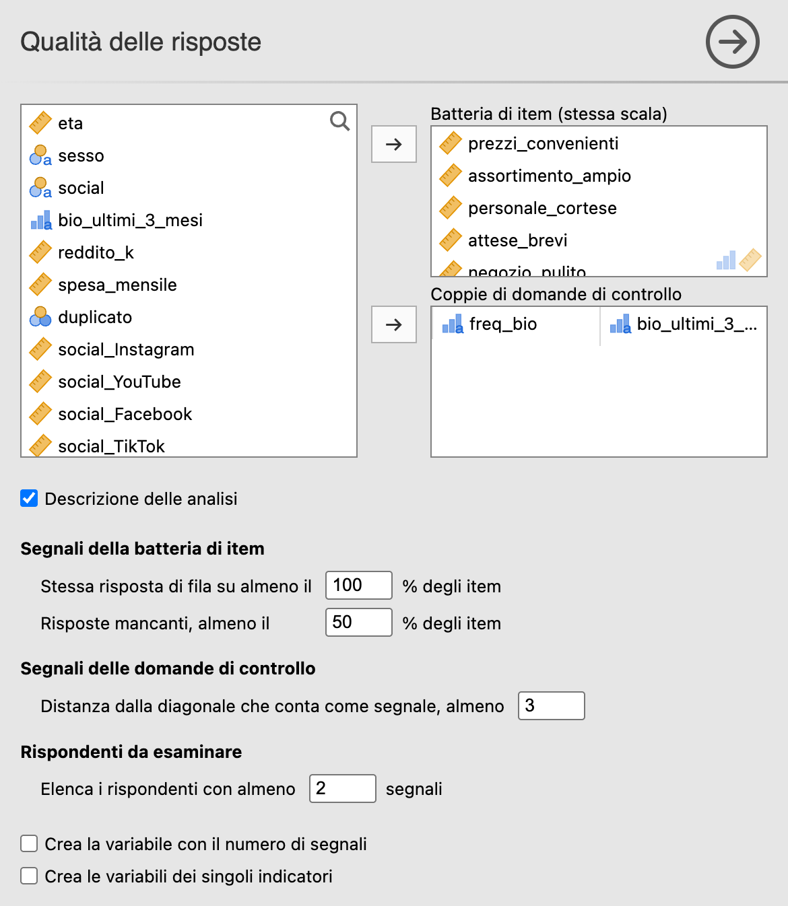
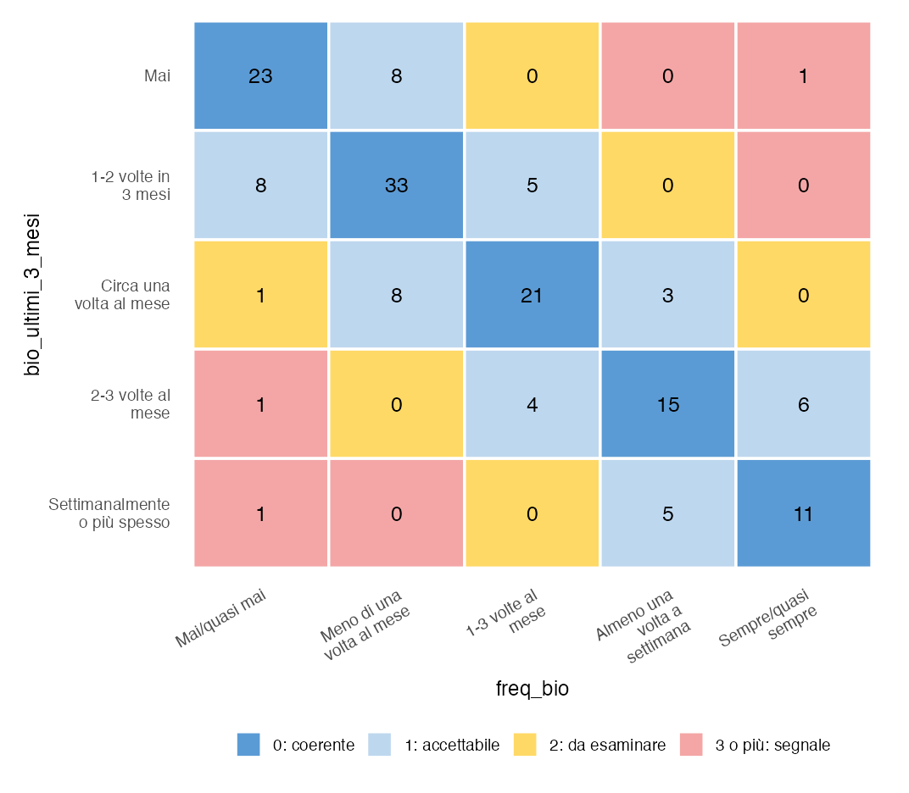
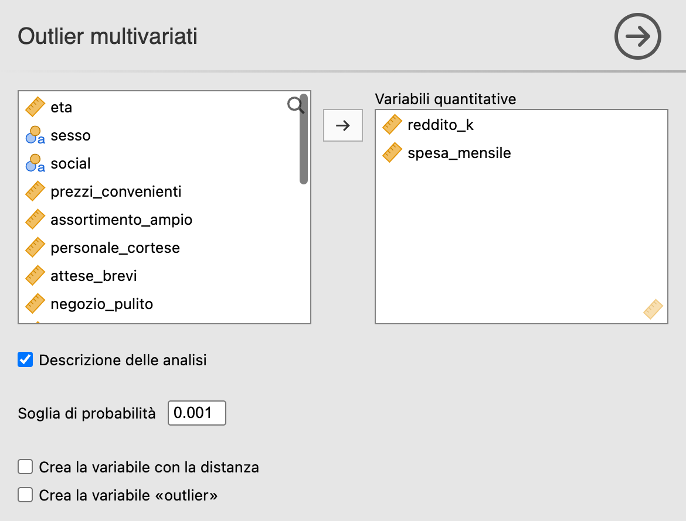

24 Preparazione dei dati
Menu: Analisi → AnalisiMercato → Preparazione dei dati
Le quattro analisi di questo gruppo svolgono i controlli della preparazione dei dati (§ T-03) che jamovi non fa con Dati → Calcola. Nessuna esclude osservazioni da sola: segnalano, e aggiungono al dataset variabili da usare come filtri o nelle analisi successive. La decisione di correggere o escludere resta a chi fa l’analisi, e va annotata nel registro della pulizia (fase 10 di T-03).
| Analisi | Fase di T-03 | Che cosa fa | Che cosa aggiunge al dataset |
|---|---|---|---|
| Duplicati | 1 | Trova le righe uguali sulle variabili scelte | duplicato: 1 per le righe ripetute da escludere |
| Variabili dummy | 5 | Una variabile 0/1 per modalità, anche per le domande a risposta multipla | Le dummy, una per modalità o per opzione |
| Qualità delle risposte | 3, 7 e 9 | Conta i segnali di risposte date con poca attenzione | Il numero di segnali e, a scelta, i singoli indicatori |
| Outlier multivariati | 6 | Misura la distanza di Mahalanobis dal centro dei dati | La distanza e un indicatore 0/1 |
24.1 Il dataset d’esempio
Gli esempi usano Questionario da ripulire, che si apre da Menu ≡ → Apri → Libreria Dati → Tecniche di Analisi di Mercato. Sono 154 risposte a un questionario sui clienti di un punto vendita, come le esporta Moduli Google, prima della pulizia: dati sintetici, costruiti apposta perché contengano i problemi più comuni.
| Variabili | Contenuto |
|---|---|
informazione_cronologica, email |
Data e ora dell’invio ed email del rispondente |
eta, sesso |
Età e sesso |
social |
Social usati almeno una volta alla settimana: risposta multipla, opzioni separate da virgole |
prezzi_convenienti … personale_scortese |
Batteria di sei item da 1 a 5 sul punto vendita; personale_scortese è formulato al contrario |
freq_bio, bio_ultimi_3_mesi |
Due domande di controllo sull’acquisto di prodotti biologici, come nell’esempio di T-03 |
reddito_k, spesa_mensile |
Reddito annuo in migliaia di euro e spesa mensile nel punto vendita |
24.2 Duplicati
Menu: Analisi → AnalisiMercato → Preparazione dei dati → Duplicati
24.2.1 Quando usarlo
Con i moduli online capitano gli invii doppi: chi clicca due volte su Invia, chi rimanda il modulo per correggere una risposta. Contati due volte, quei rispondenti pesano il doppio in tutte le analisi. L’analisi trova le righe uguali in due modi, a seconda delle variabili scelte:
- tutte le variabili del questionario, tranne l’informazione cronologica, che cambia a ogni invio: si trovano gli invii identici;
- solo le variabili che identificano il rispondente, come l’email o la matricola: si trova chi ha risposto più volte, anche con risposte diverse.
24.2.2 L’interfaccia

| Opzione | Default | Note |
|---|---|---|
| Variabili da confrontare | — | Ammette anche le variabili di tipo ID, come l’email |
| Ignora maiuscole e spazi nei testi | attiva | Mario.Rossi@x.it e mario.rossi@x.it sono la stessa email |
| Crea la variabile «duplicato» | non attiva | Aggiunge duplicato: 0 per le righe da tenere, 1 per le altre |
Due regole sui valori mancanti:
- due mancanti nella stessa variabile contano come uguali;
- le righe in cui mancano tutte le variabili scelte, per esempio senza email, non si confrontano: altrimenti risulterebbero tutte duplicate fra loro.
Di ogni gruppo di righe uguali si tiene l’ultima: nel secondo invio il rispondente può aver corretto qualcosa, e nei file di Moduli Google, che sono in ordine di invio, l’ultima riga è la più recente.
24.2.3 Esempio pratico
Passi: Variabili da confrontare → email; Crea la variabile «duplicato» attiva.
Output atteso — tabelle Riepilogo e Righe uguali:
| Righe confrontate | Gruppi di righe uguali | Righe in più | Righe senza dati |
|---|---|---|---|
| 152 | 4 | 4 | 2 |
| Gruppo | Righe | Riga da tenere | |
|---|---|---|---|
| 1 | 22, 23 | 23 | sara.cocco53@esempio.it |
| 2 | 65, 66 | 66 | luca.loi23@esempio.it |
| 3 | 97, 126 | 126 | luca.sanna95@esempio.it |
| 4 | 133, 134 | 134 | chiara.satta39@esempio.it |
Lettura. Quattro rispondenti hanno inviato il modulo due volte; le due righe senza email non sono state confrontate. I quattro casi non sono uguali fra loro:
- le righe 22–23 e 133–134 sono identiche e inviate a un minuto di distanza: un doppio clic;
- nella riga 66 l’email è scritta con l’iniziale maiuscola e con degli spazi, e il reddito è diverso: il rispondente ha corretto il dato dopo 40 minuti. Senza Ignora maiuscole e spazi nei testi questo gruppo non si trova;
- la riga 126 arriva due giorni dopo la 97, con un’altra risposta sui social.
Confrontando invece tutte le variabili tranne informazione_cronologica, i gruppi sono solo 2: le righe 22–23 e 133–134, gli unici invii identici. Gli altri due rispondenti hanno cambiato almeno una risposta, quindi le loro righe non sono uguali.
Per escludere le righe ripetute si usa la variabile creata: Dati → Filtri con duplicato == 0. Le righe con 1 restano nel file ma escono dalle analisi, e la scelta resta visibile e reversibile.

24.3 Variabili dummy
Menu: Analisi → AnalisiMercato → Preparazione dei dati → Variabili dummy
24.3.1 Quando usarle
L’analisi crea le dummy di una o più variabili categoriali: una variabile per ciascuna modalità, che vale 1 se l’osservazione ha quella modalità e 0 altrimenti (§ T-03, fase 5). Servono soprattutto in due casi:
- domande a risposta multipla: Moduli Google mette in una sola cella le opzioni scelte, separate da virgole («Instagram, TikTok»). Così com’è, la variabile non si analizza; con una dummy per opzione, sì;
- binarie di presenza/assenza per la cluster analysis con Gower: le dummy sono variabili 0/1 di tipo continuo e vanno direttamente nella casella Binarie di presenza/assenza (§ P-17).
24.3.2 L’interfaccia

| Opzione | Default | Note |
|---|---|---|
| Variabili categoriali | — | Nominali, ordinali o di testo |
| Risposta multipla | non attiva | Ogni cella si divide al separatore e si crea una dummy per opzione |
| ↳ Separatore | , |
Quello di Moduli Google è la virgola |
| ↳ Riunisci in «altro» le opzioni scelte meno di | 2 volte | Con 1 non si riunisce nessuna opzione |
| Crea le variabili dummy | non attiva | Aggiunge le dummy al dataset |
Tre regole da conoscere:
- si creano tutte le modalità, non una in meno come nei modelli di regressione: nelle analisi del modulo ogni modalità va rappresentata (§ T-03);
- dove manca la variabile originale mancano anche le sue dummy: chi non ha risposto non ha 0, ha un valore mancante;
- le dummy si chiamano
variabile_modalità, con un trattino basso al posto di spazi e simboli (social_Instagram), e sono di tipo continuo.
24.4 Qualità delle risposte
Menu: Analisi → AnalisiMercato → Preparazione dei dati → Qualità delle risposte
24.4.1 Quando usarla
L’analisi cerca i rispondenti che hanno compilato il questionario con poca attenzione (§ T-03, fasi 3, 7 e 9). Ha due parti, che si usano insieme o da sole.
- Batteria di item: le domande con la stessa scala di risposta poste una dopo l’altra, nell’ordine del questionario. Per ogni rispondente l’analisi conta quante volte di fila dà la stessa risposta e quante risposte mancano. Chi risponde 3, 3, 3, 3, 3, 3 dà la stessa risposta a 6 item su 6; chi risponde 4, 4, 2, 5, 4, 3 al massimo a 2 di fila.
- Coppie di domande di controllo: domande che chiedono la stessa informazione con le modalità nello stesso ordine. Per ogni rispondente si misura quanto la coppia di risposte è lontana dalla diagonale della matrice di coerenza: 0 sulla diagonale, 1 sulle celle adiacenti, 2 a due passi, 3 o più per le contraddizioni forti.
Ogni indicatore oltre la sua soglia è un segnale. Un segnale da solo non basta per escludere qualcuno: un cliente molto soddisfatto può dare 5 a tutto. Di solito un rispondente si esclude solo con più segnali insieme, e con criteri fissati prima di guardare i dati.
24.4.2 L’interfaccia

| Opzione | Default | Note |
|---|---|---|
| Batteria di item (stessa scala) | — | Gli item nell’ordine del questionario |
| Coppie di domande di controllo | — | Due domande per riga, con lo stesso numero di modalità nello stesso ordine |
| Stessa risposta di fila su almeno il | 100% degli item | Con 100 il segnale scatta solo per chi dà la stessa risposta a tutti gli item |
| Risposte mancanti, almeno il | 50% degli item | |
| Distanza dalla diagonale che conta come segnale, almeno | 3 | Con 2 contano anche le incoerenze da esaminare |
| Elenca i rispondenti con almeno | 2 segnali | |
| Crea la variabile con il numero di segnali | non attiva | Aggiunge segnali |
| Crea le variabili dei singoli indicatori | non attiva | Aggiunge di_fila, mancanti e una distanza per ogni coppia |
24.4.3 Esempio pratico
Passi: Batteria di item → i sei item da prezzi_convenienti a personale_scortese; Coppie di domande di controllo → freq_bio e bio_ultimi_3_mesi; soglie predefinite.
Output atteso — tabelle Segnali e Rispondenti da esaminare:
| Segnale | Criterio | Rispondenti | % dei rispondenti |
|---|---|---|---|
| Stessa risposta di fila | almeno 6 item di fila su 6 | 8 | 5,2% |
| Risposte mancanti | almeno 3 item su 6 | 3 | 1,9% |
| Coppia freq_bio – bio_ultimi_3_mesi | distanza dalla diagonale almeno 3 | 3 | 1,9% |
| Riga | Segnali | Stessa risposta di fila | Mancanti | Distanza freq_bio – bio_ultimi_3_mesi |
|---|---|---|---|---|
| 68 | 2 | 6 | 0 | 4 |
Lettura. Otto rispondenti hanno dato la stessa risposta a tutti e sei gli item. Fra questi, chi ha risposto 5 a tutto ha dato 5 anche a personale_scortese, formulato al contrario: ha detto che il personale è cortese e, subito dopo, che è scortese. Tre rispondenti hanno saltato metà della batteria o più, e tre hanno dato alle domande di controllo risposte che si contraddicono.
Un solo rispondente ha due segnali insieme, quello della riga 68: ha risposto 3 a tutti gli item e, alle domande di controllo, «Sempre/quasi sempre» alla prima e «Mai» alla seconda. È il candidato più forte all’esclusione, da valutare con i criteri fissati prima dell’analisi.

La matrice di coerenza riporta quanti rispondenti cadono in ogni combinazione di risposte, con i colori di T-03: blu sulla diagonale, azzurro sulle celle adiacenti, giallo a due passi, rosso per le celle che contano come segnale. I colori seguono la soglia scelta: con la distanza a 2 diventano rosse anche le celle gialle, e i rispondenti con il segnale della coppia salgono a 4.
24.5 Outlier multivariati
Menu: Analisi → AnalisiMercato → Preparazione dei dati → Outlier multivariati
24.5.1 Quando usarla
Un valore può essere normale su ogni variabile presa da sola e insolito nella combinazione. La distanza di Mahalanobis misura quanto ogni osservazione è lontana dal centro dei dati tenendo conto delle correlazioni fra le variabili (§ T-03, fase 6). È il controllo naturale prima della cluster analysis, dove pochi punti anomali possono formare gruppi a sé.
Un’osservazione è un outlier quando la sua distanza al quadrato (D²) supera il valore critico del chi-quadrato con tanti gradi di libertà quante sono le variabili, alla soglia scelta: di solito 0,001, cioè una distanza così grande si avrebbe per caso meno di una volta su mille.
24.5.2 L’interfaccia

| Opzione | Default | Note |
|---|---|---|
| Variabili quantitative | — | Almeno due |
| Soglia di probabilità | 0,001 | Più alta, più osservazioni segnalate |
| Crea la variabile con la distanza | non attiva | Aggiunge mahal_D2 |
| Crea la variabile «outlier» | non attiva | Aggiunge outlier: 1 per gli outlier, 0 per le altre osservazioni |
Le righe con un valore mancante non hanno distanza. Con variabili collineari, per esempio tutte le dummy di una stessa variabile, la distanza non è calcolabile e l’analisi si ferma con un messaggio.
24.5.3 Esempio pratico — reddito e spesa
Passi: Variabili quantitative → reddito_k, spesa_mensile.
Output atteso — tabelle Riepilogo e Osservazioni oltre la soglia:
| Osservazioni usate | Variabili | Valore critico di D² | Outlier | Righe con mancanti |
|---|---|---|---|---|
| 154 | 2 | 13,8 | 2 | 0 |
| Riga | D² | p | reddito_k | spesa_mensile |
|---|---|---|---|---|
| 79 | 31,6 | < 0,001 | 45,0 | 165 |
| 91 | 16,0 | < 0,001 | 53,1 | 541 |
Lettura. Reddito e spesa vanno insieme (correlazione 0,76): chi guadagna di più, di solito, spende di più. I due outlier lo sono per ragioni diverse:
- la riga 79 non è estrema né per il reddito né per la spesa (z = 2,3 e −1,6): 45 mila euro è un reddito alto, ma dentro i baffi del boxplot, e 165 euro è una spesa bassa ma non rara, perché 9 rispondenti spendono così o meno. È la combinazione a essere insolita: un reddito alto con una spesa così bassa va contro la tendenza di tutti gli altri. Il boxplot di ciascuna variabile non l’avrebbe segnalata;
- la riga 91 ha reddito e spesa molto alti entrambi (z = 3,3 e 4,0): è coerente con la tendenza, ma lontana dal centro, ed è estrema anche variabile per variabile.
Prima di decidere, ogni outlier va verificato: un errore di digitazione si corregge, un caso raro ma reale di solito si tiene e si segnala nel report (§ T-03). Gli outlier, poi, gonfiano la covarianza da cui si calcola la distanza: se sono molti, possono nascondersi a vicenda.
24.6 Errori comuni
- ❌ Confrontare i duplicati includendo l’informazione cronologica: cambia a ogni invio, quindi due invii identici non risultano mai uguali.
- ❌ Cancellare le righe segnalate: le analisi di questo gruppo segnalano e non escludono. Si esclude con un filtro sulla variabile creata, così la scelta resta reversibile e si documenta.
- ❌ Escludere un rispondente per un solo segnale: le risposte tutte uguali possono essere sincere; servono più segnali insieme e criteri fissati in anticipo.
- ❌ Mettere nella batteria item con scale diverse: la stessa risposta di fila ha senso solo fra item con la stessa scala.
- ❌ Leggere le percentuali delle dummy di una risposta multipla come una ripartizione: non sommano a 100, perché ogni rispondente può scegliere più opzioni.